Unchanged taste
People say the taste has not changed since the day it started — four decades on the same road.
Prince Road · Quetta · Est. mid-1980s
Halwa puri and paye from before dawn. Anda paratha off a hot tawa. Nihari for the workers of Prince Road. The taste, people say, has not changed since the day it started.
4.0 ★ from 1,500+ Google reviews · Breakfast, lunch & dinner
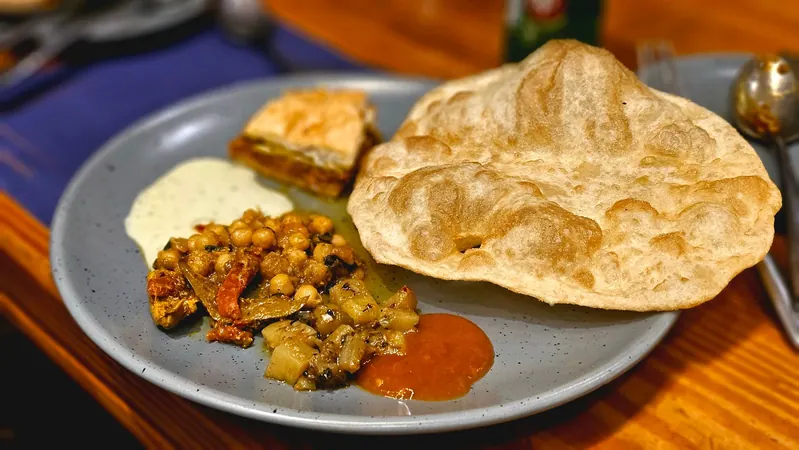
01 · The board
One shop, one tawa, one long morning. These are the plates Quetta comes to Prince Road for — served from before dawn until the morning crowd thins.
The plate Dawn calls the best way to start the day in Quetta — puffed puri, halwa and chana.
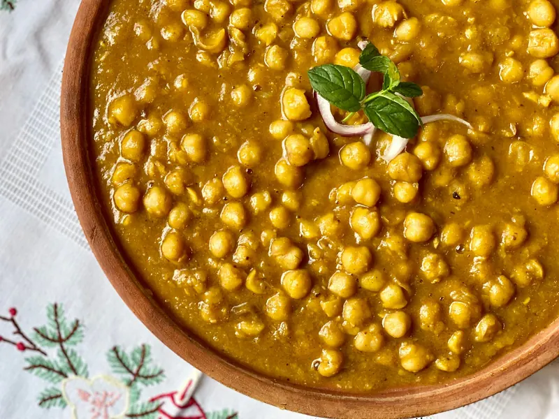
The celebrated partner to the puri — potatoes and chickpeas, ladled hot.
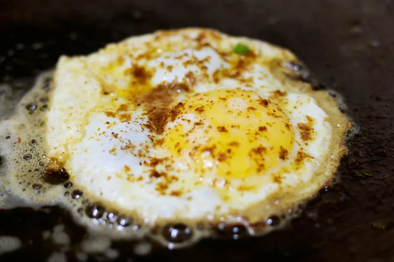
A morning highlight: egg and paratha, straight off the tawa.
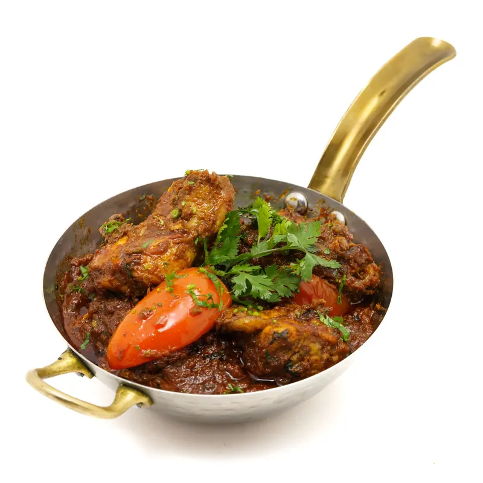
Slow-cooked and sustaining — the breakfast Prince Road’s workers swear by.
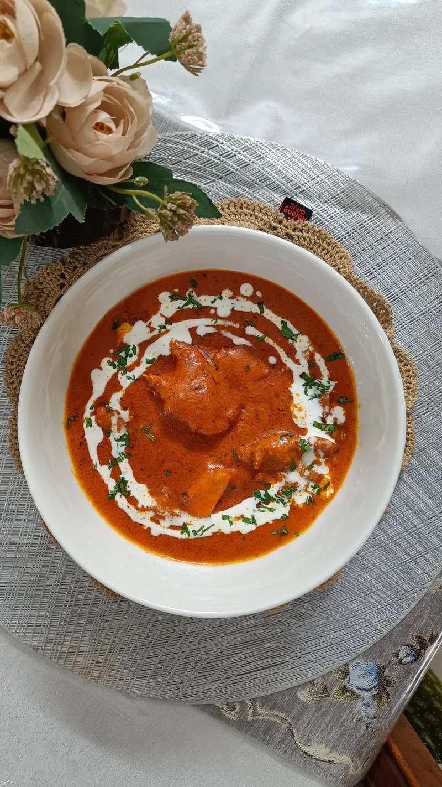
On the stove from before dawn, for the earliest risers on Prince Road.
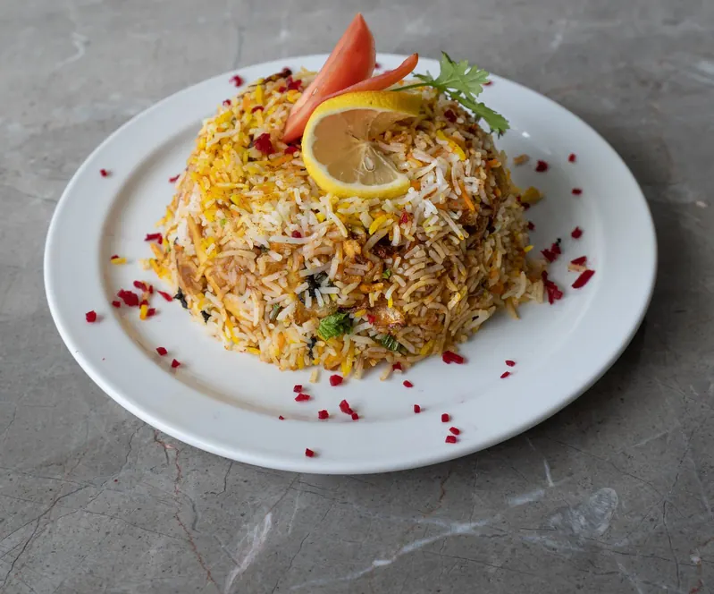
The house special that carries the day past breakfast — lunch and dinner.
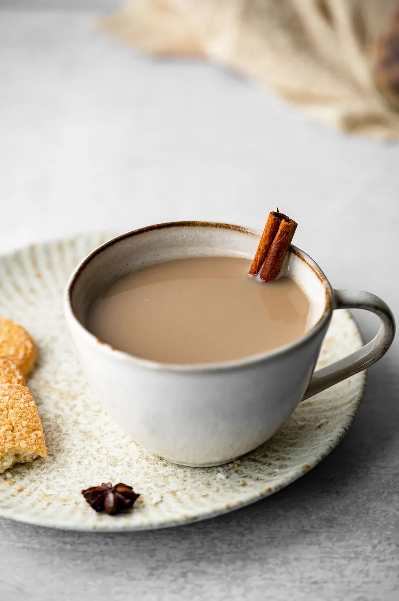
Milky, slow-brewed, and poured all morning long.
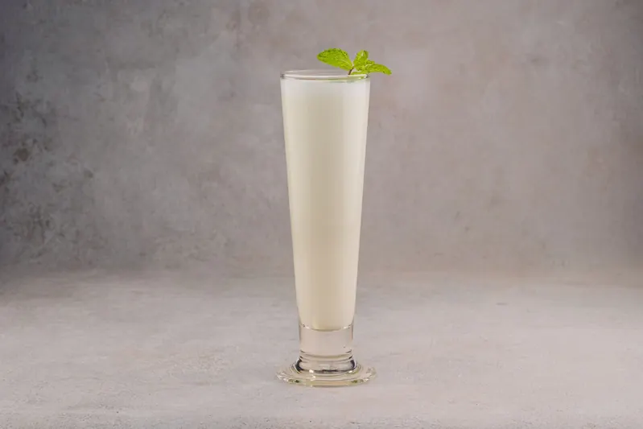
Cold, thick and sweet — the finish to a heavy Quetta breakfast.
Prices on request — ask at the counter. The board follows the morning: when a dish runs out, it runs out.
02 · The morning
The day here starts before the city does. This is the routine the shop has kept since the mid-1980s.
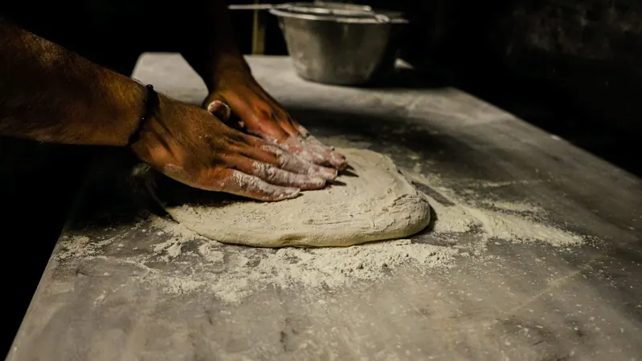
The dough is kneaded and the first paye goes on the stove while Prince Road is still quiet. Halwa puri and paye are ready from before dawn.
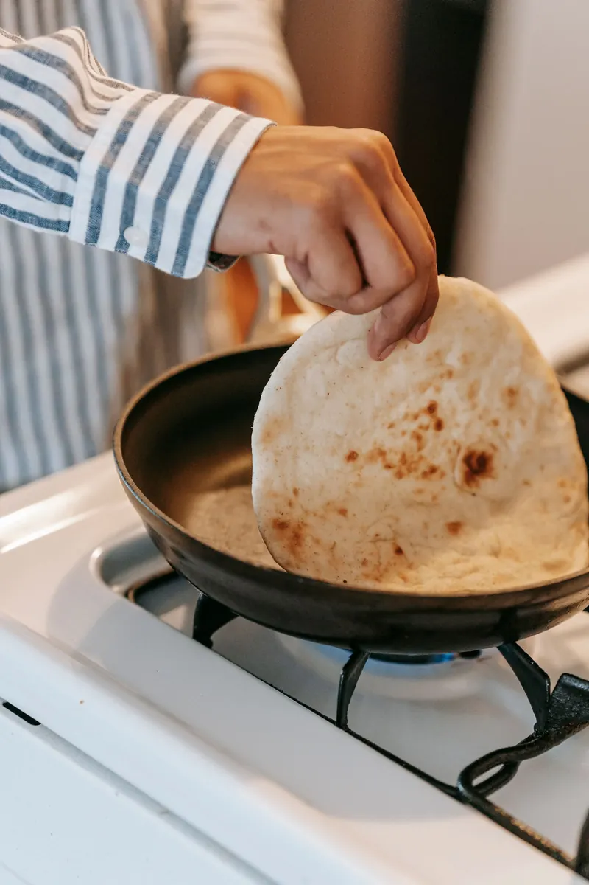
Parathas hit the tawa one after another. Anda paratha, plain paratha, and the egg frying beside them.
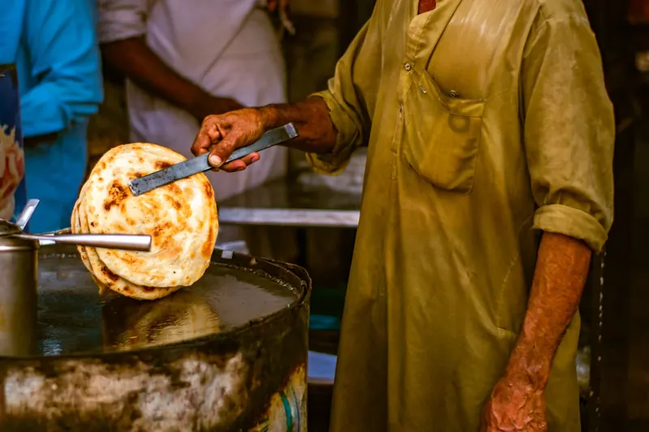
Workers come in from different areas of Quetta — barbers from the shops around Prince Road, labourers starting long days. Nihari is the order that sustains them.
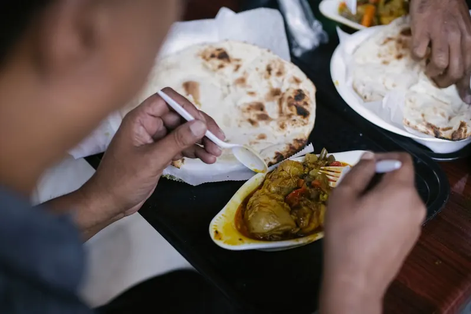
On the weekend the crowd changes: people come along with their families, and the tables stay full long after breakfast.
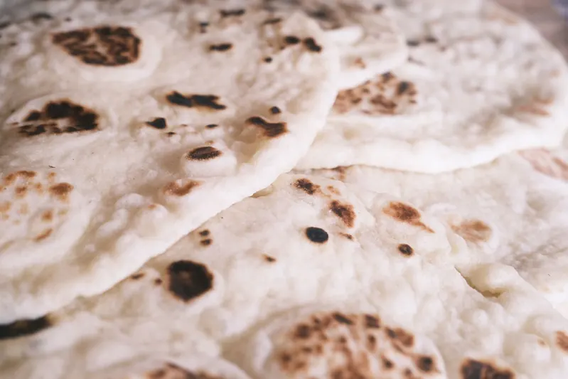
03 · From the tawa
The paratha is the backbone of the morning here. Rolled, rested and fried on the tawa through the rush — torn open at the table and eaten with chana, egg or nihari. The anda paratha is the one regulars point visitors to first.
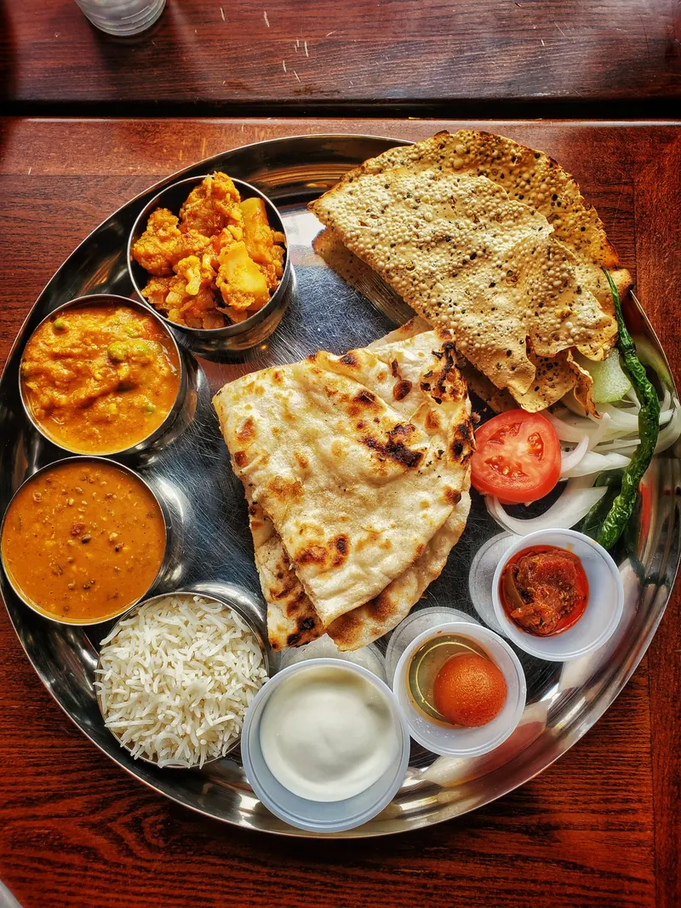
Forty years counts from the mid-1980s opening; the rating and review count are the Google figures.
04 · Why Quetta comes here
“There’s nothing better than starting the day with amazing halwa puri at Naimat Kada on Prince Road, one of the busiest markets of Quetta.”
— Dawn, EOS, 16 April 2017 · Read the piece
People say the taste has not changed since the day it started — four decades on the same road.
The signature plate: puffed puri, halwa and aalo choley, drawing a bustling morning crowd.
The highlight regulars name first — egg and paratha, hot off the tawa.
Prince Road’s barbers and labourers eat nihari for breakfast because it carries them through the day.
Weekdays belong to the workers; on weekends, families come along and the tables fill up.
What began as a breakfast-only shop now serves lunch and dinner too — with the special biryani.
“We savored the best halwa puri ever.” — a traveller’s review on Tripadvisor
05 · The morning, in pictures
Photographs are illustrative — the dishes, the tea and the bazaar around Prince Road are the real subject.
06 · Find us
Phone +92 332 8501604
Breakfast From before dawn — the morning board is the main event
Lunch & dinner Also served, with the special biryani
Opening hours are not published online — call ahead to confirm today’s hours before you set out.
Open in Google Maps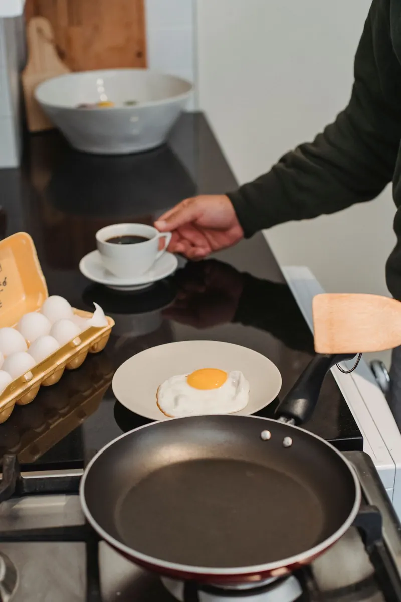
Come early. The halwa puri goes first, and the morning crowd on Prince Road does not wait.
07 · Good to know
Halwa puri above all — with aalo choley and anda paratha the other morning highlights. Dawn called it the best way to start the day in Quetta, and travellers have called it the best halwa puri they ever had.
Early. Halwa puri and paye are served from before dawn, and the morning crowd builds fast. Call 0332 8501604 ahead to confirm today’s hours.
Yes. What began in the mid-1980s as a breakfast-only shop now serves lunch and dinner as well, with a special biryani.
On weekends, people come along with their families — that is the pattern Dawn reported. Weekday mornings belong mostly to workers from around Prince Road.
No online ordering is published. The reliable way is to call the shop on 0332 8501604 and ask what is fresh and what can be packed.
On Prince Road, near Fatima Jinnah Road, in Quetta — one of the city’s busiest markets. Use the Google Maps link in the Visit section for directions.
08 · Hungry?
Breakfast starts before dawn on Prince Road. One call tells you what is on the tawa today.
Prince Road, near Fatima Jinnah Road, Quetta · Breakfast, lunch & dinner